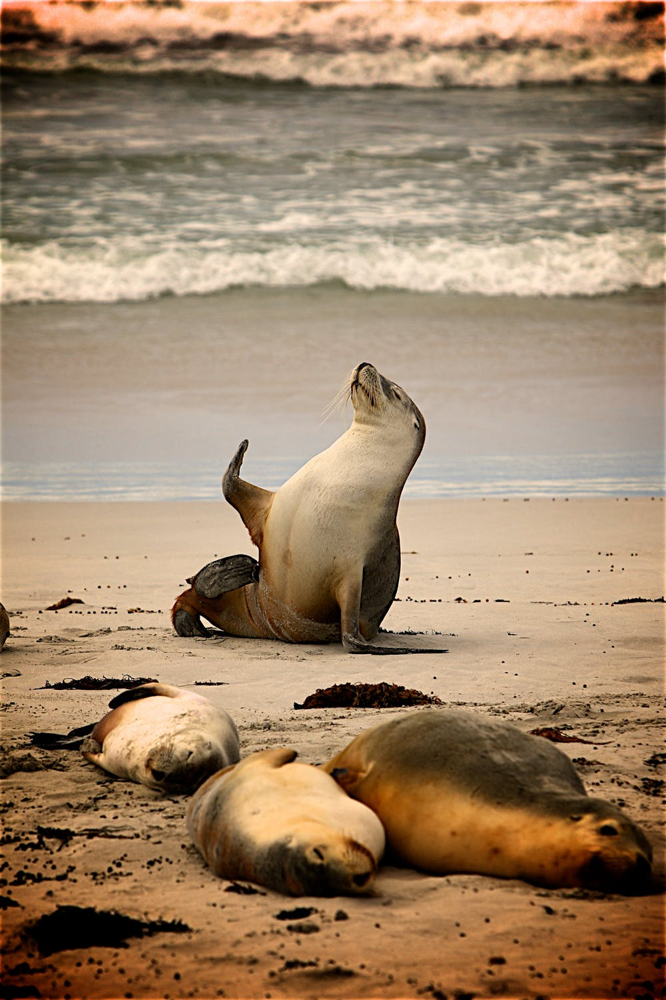

About
What is the world ocean day?
World Oceans Day takes place every 8 June. Concept was originally proposed in 1992 by Canada's international Centre for Ocean Development and the Ocean Institute of Canada at the Earth Summit. It is an annual observation to honor, help protect, and conserve the world's oceans. The ocean provides us with many resources and services including oxygen, climate regulation, food sources, medicine, and more. World Oceans Day also provides an opportunity to take personal and community action to conserve the ocean and its resources.
What it means to us?
The Ocean is the heart of the planet. Water covers more then two-thirds of the Earth's surface. Sea plants produce 70% of the oxygen we breathe, and the deep waters are home to wildlife and some of the biggest creatures on earth.
- The Ocean produces more oxygen than the Amazons.
- The Ocean regulates the Earth climate.
- Many creatures depend and live in the Oceans.
What can we do?
Earth is a big place and there is only so much we can do to make a difference. However, there are things we can do in our daily lives to stand for a better, healthier world.
- Bring your own shopping bag
- Stop buying bottled water
- Choose cardboard over plastic bottles and bags
- Say no to straws
- Shop in bulk